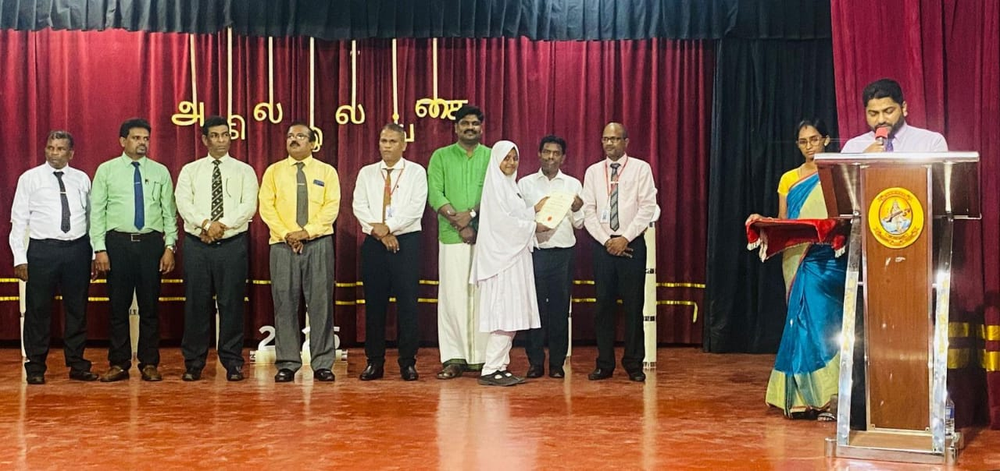
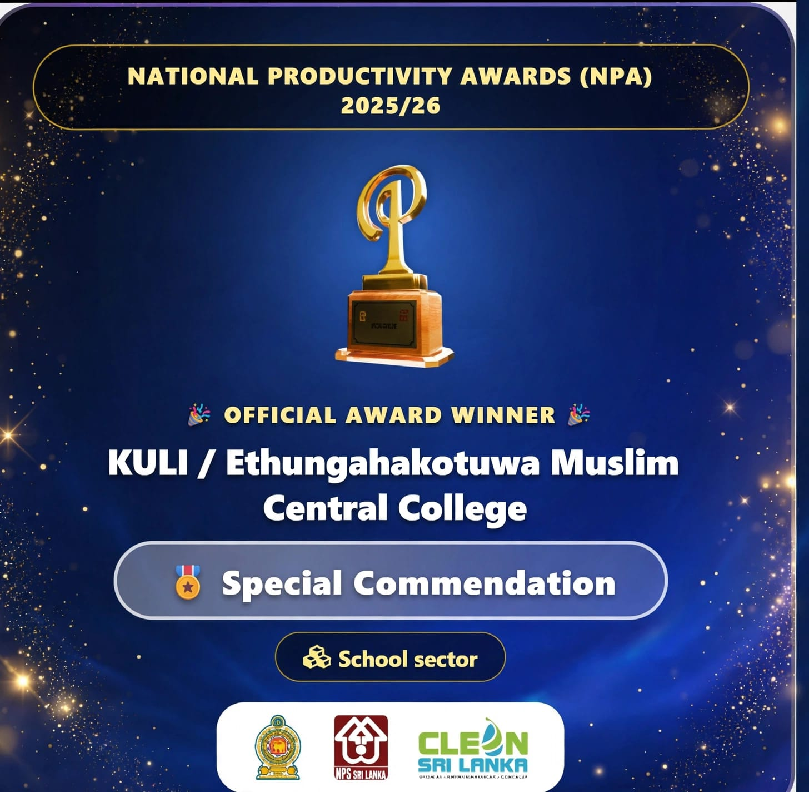
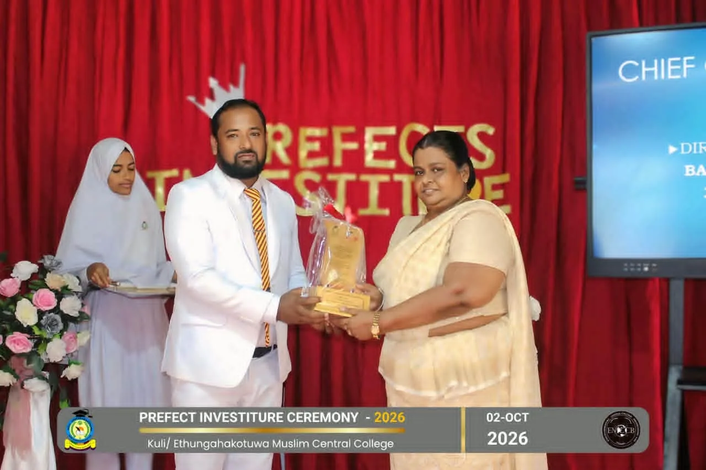
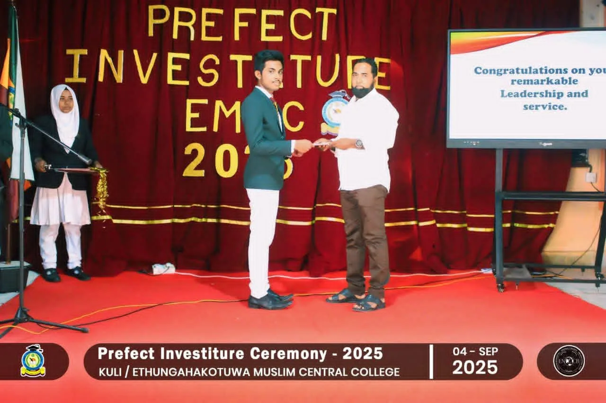
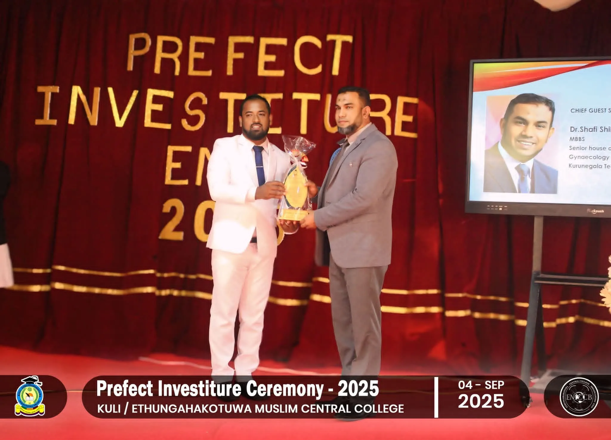

CEREMONY
 EMCCETHUNGAHAKOTUWA MUSLIM
EMCCETHUNGAHAKOTUWA MUSLIMA dedicated space for verified achievements and milestones from the EMCC community.
A photo record of school ceremonies, student recognition, leadership and national awards from the EMCC community.









Verified examination results, subject awards and academic competition outcomes.
Confirmed team and individual achievements across school sports.
Approved achievements from clubs, societies, creative activities and student leadership.
Detailed records are published once confirmed by the school office.
Examination results, awards and competition outcomes are published once the school office has confirmed them, together with the year, category and recipient.
Contact the school office ↗